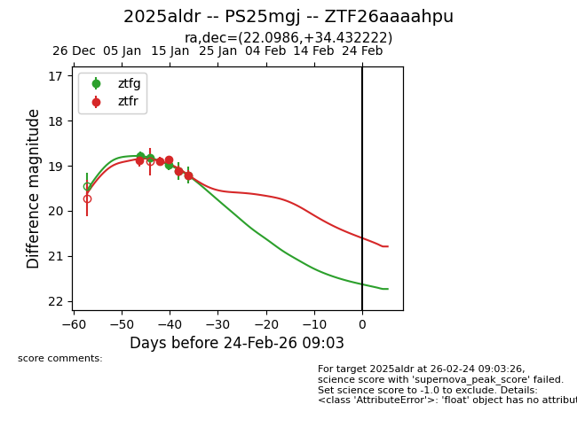
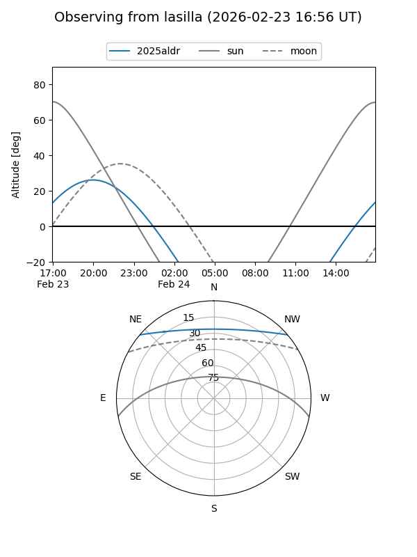
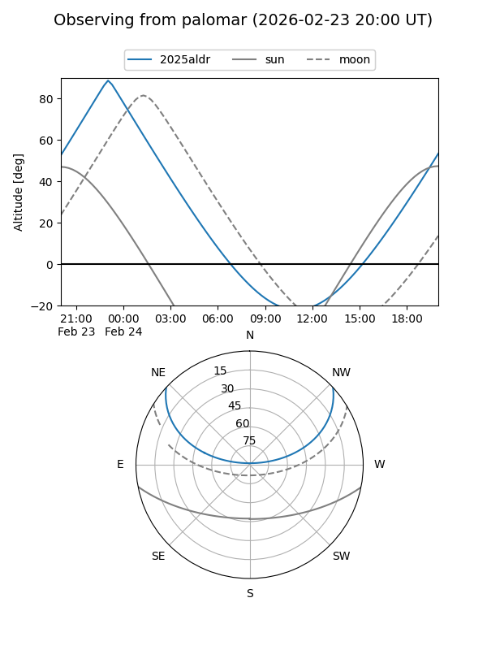
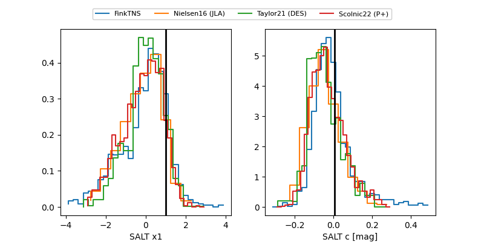

2025aldr
Target 2025aldr at 2026-01-19 04:00
Aliases and brokers:
FINK: link
Lasair: link
ALeRCE: link
TNS: link
YSE: link
alt names
ZTF26aaaahpu (ztf,fink_ztf)
2025aldr (tns,yse)
PS25mgj (panstarrs)
Coordinates:
equatorial (ra, dec) = 22.0986,+34.43222
equatorial (HMS+DMS) = 01:28:23.66,+34:25:56.00
galactic (l, b) = (131.5434,-27.82081)
Flags:
Photometry:
last ztfg=19.21, ztfr=19.21
5 ztfg, 5 ztfr detections
Lightcurve

Visibility


Additional plots
